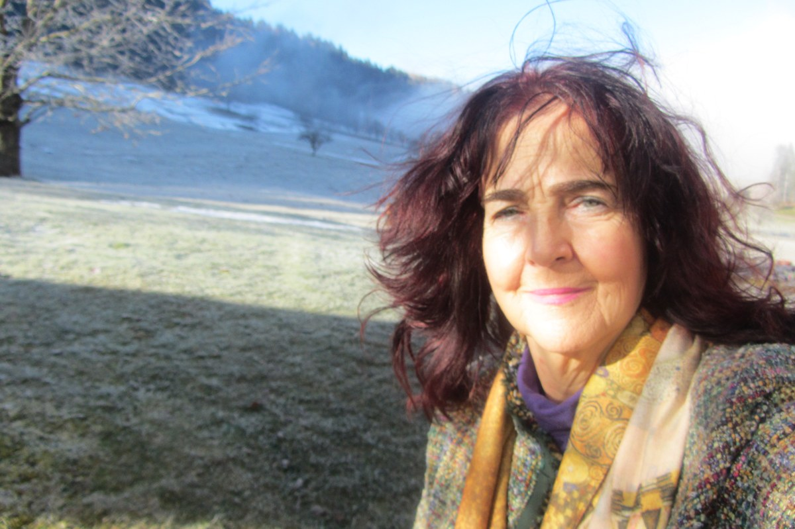

Interni predogled, ni v živo. To so odgovori, kot jih je lista oddala; nismo jih urejali.
2. Slovenska ljudska stranka

Predstavitev liste
Imamo 1 članico; Renato Picej, Župančičeva jama Poleg splošnih ciljev SLS imam še svojo posebno prioriteto 1. OHRANITEV IN ZAŠČITA DEDIŠČINE PLEČNIKA pred požrešnostjo gradbenih in političnih lobijev lobijev 2. OHRANITEV MESTNE TRŽNICE V SEDANJIH GABARITIH 3. STOP ZAPIRANJU ULIC V CENTRU LJUBLJANE Lepo, da se je promet v centru umiril, vendar BLOKIRANJE CENTRA je reveč. V Ljubljani ne žive zgolj pešci in kolesarji! Zaprta Miklošičeva cesta preprečuje še zadovoljiv premik do bližine centra. Na novih klopeh Miklošičeve ulice posedajo ljudje, ki jim je dala Slovenija zatočišče, in ne Ljubljančani! 4. ODPRAVA NOČNE TARIFE PARKIRANJA po 2 EUR in uvedba brezplačnega prkiranja čez vikend 5. STOP POVAMPIRJENJU ARHITEKTURE V LJUBLJANI, SKRB ZA VEDUTO LJUBLJANE. Nekontrolirana rast stolpnic, kjer si kdo zamisli. Gradnja zgolj komercialnih stanovanj. 6. DVIG PONOSA NAD ZELENJEM LJUBLJANE – PARKI, BLIŽNJI GOZDOVI Skrb nad sečnjo dreves in ukinjanjem zelenic. 7.PROGRAM ZA LJUDI; OD DRAGULJRNE UŽITKOV DO
SLS ima 100 letno tradicijo, zgrajeno na spoštovanju in čuvanju ZEMLJE, VODE in ZRAKA! V ospredju je ČLOVEK! In skrb zanj, ne zgolj fizična, tudi psiha šteje. In občutki, čustva... Samota, ki vsak dan bolj načenja zdravje!
Zakaj glasovati za vas
Zakaj naj prebivalka ali prebivalec Savskega naselja glasuje prav za vašo listo?
RazlagaKer delujemo pod sloganom "NAZAJ K ČLOVEKU!! Ker imamo VREDNOTE, spoštujemo DEDIŠČINO, ker nam je ŽIVLJENJE v MIRU, v DRUŽBI, čistem OKOLJU, ob čisti VODI in ZRAKU - SVETO! Ker vabimo celo sosesko v SKUPNO DRUŽINO, kjer bomo poskrbeli, da samote, samosti, velike praznine, občutka zapuščenosti,..., ne bo več!
Kaj lahko prebivalci Savskega naselja pričakujejo prav od vas, če boste izvoljeni?
RazlagaMoja zaveza bo skrb za človeka; moje delovanje bo potekalo pod sloganom: "Nazaj k člo veku"! V mislih imam takorekoč "software" življenja v Ljubljani, da bo življenje za kanček bolj znosno (vsaj za večino), bolj prijazno, veselo in ne tako prazno, samotno, žalostno, že skoraj nevzdržno. Zavzela se bom za posameznika, družino, mlade pare in zakonce, mamice, ženske samohranilke in moške samohranilce, otroke, mladostnike in ljudi v zlatih letih. Vzpostavila bom skupino "živih in radostnih ljudi" ki bodo živeli sožitje kot je včasih bilo, naredila bom vse, da bo zaživela skupina, ki si bo pomagala (urejanje nakupov za tiste, ki to ne morejo sami, čuvanje živali, ko bodo njihovi lastniki odsotni, skrb za osebe, ki jih v času odsotnosti sorodnikov (invalidi ali nepokretni starejši) ni moč pustiti samih, zalivanje cvetja,... Organizirala bom skupino "Champagne Station", za vse ljubiteljice/ljubitelje penin, za druženje, promocije, izlete... Dogodke pod naslovom: "ZLATI PROGRAM ZA ZLATA LETA"!; za osebe, ki so čez prag aktivnega dela; druženje, izleti, ogled dogodkov,... Na kratko: zpostavila bom DRAGULJARNO UŽITKOV in ZATOČIŠČE ZA ČLOVEKA - SANATORIJ ZA DUŠO (poleg vsega že naštetega, spoved za človeške probleme in podporo odvisnikom, ki želijo izstopiti iz pekla drog, alkohola, iger na srečo,..., so že na tej poti in potrebujejo podporo, pohvalo, informacije...
Zavzemala se bom, da ne bo samote, praznine, dolgega časa,...; za vse, ki bodo to želeli! In sicer v sklopu obstoječih prostorskih zmogljivosti, kasneje v sodelovanju z različnimi ponudniki, donatorji in sponzorji.
Če ne boste izvoljeni v svet ČS, se boste še vseeno trudili za Savsko naselje — in kaj boste naredili v tem primeru? Odgovor: Da
RazlagaSodelovala tam, kjer bo to potrebno. In kjer bom dobrodošla.
🖐️5 prioritet
Pošta, banka in druge storitve 🖐️1. prioriteta
Ali se zavežete, da se bo svet ČS v prvih 3 mesecih s podatki iz ankete pisno obrnil na Pošto Slovenije in banke ter njihov odgovor objavil? Odgovor: Da
RazlagaKomunikacija s pošto je zelo težka. Pošta je dolgo ignorirala stanovalce soseke Župančičeve jame, Savskemu naselju pa je pošto celo vzela. Župančičeva jama je zaposljevala veliko oholih, samovšečnih, lenih in neprijaznih ženskih uslužbenk. Zdaj poleg znamk dosti več skorajda ne moreš kupiti, poštnih storitev pa ne opraviti. Ja, z vso vnemo bom poskrbela za komunikacijo s pošto in drugimi vladnimi institucijami, da se POŠTA ZGODI! Zavzela se bom, da slovenska pošta ne bo šla po poti Danske in da Savskemu naselju vrnila dolgoletno institucijo
Ali se kot člani sveta zavežete, da se boste skupaj s civilno pobudo, MOL, partnerji, razpisi, poiskali ali ustvarili rešitve za umestitev Pošte in Banke in drugih storitev iz ankete, na primer lekarne, trgovine in pekarne, v Savsko naselje? Odgovor: Da
RazlagaKomunikacija in sodelovanje z vsemi potrebnimi institucijami, organi,...
Drevesa in zelenice 🖐️2. prioriteta
Ali se zavežete, da boste v prvih 6 mesecih dali pobudo MOL, da pregleda drevesa v naselju (katera so zdrava, katera ne in katera so primerna za posek), predvidi nove zasaditve, za vsako posekano drevo na javni površini zasadi novo in prebivalce o poseku obvesti vnaprej? Odgovor: Da
RazlagaKomunikacija in sodelovanje z vsemi potrebnimi institucijami, podjetji...
Lasten predlogVzpostavila bi stik z Arboretumom Volčji Potok in direktorjem Matjažem Mastnakom ter predlaga vzpostavitev mini Arboretuma, ki bi deloval kot njihova promocija v glavnem mestu Slovenije ter kot cvetlični otok vzbujal pozornost ter zatočišče za številne ljubitelje cvetja. V njem bi stale promocijske klopi veleposlaništev; Slovenija ima vzpostavljene diplomatske oz. konzularne odnose s 109 državami.
Ali se zavežete, da boste prebivalce vključili pri izbiri mest za nova drevesa, preden jih predlagate v plan malih del 2028–2029? Odgovor: Da
RazlagaS prebivalci in Arboretumom bomo izbrali prava drevesa in prava mesta zanje, toliko bolj, ker ima Arboretum zdaj celo pot dreves, ki so lažje prilagodljiva novodobnim vremenskim pojavom.
Lasten predlogSavsko naselje in Bežigrad bosta postala vzorčni model sobivanja človeka in narave. Pri skrbi za cvetje bodo lahko sodelovali ljubitelji cvetja. V njihovem uživanju in na klopeh, ki jih bodo sponzorirale različne države z diplomatkimi predstavništvi v Sloveniji, pa sedeli in uživali vsi!
Dom skupnosti, prostor za druženje 🖐️3. prioriteta
Ali se kot člani sveta ČS zavežete, da boste v prvem letu pregledali, kateri prostori v Savskem naselju so na voljo za skupne dejavnosti, in da boste uredili prostore v domu skupnosti za souporabo prebivalcev? Odgovor: Da
RazlagaVsekakor je začetek v naboru prostorov, ki so na voljo. Sledi pogovor s člani sveta ČS, katere dejavnosti bomo izpeljali najprej in katere malo kasneje, Potem so na vrsti nositelji projektov, programov... In začetek dela!
Ali se zavežete, da boste v prvem letu dali pobudo MOL, da objavi načrt in rok obnove stavbe na Belokranjski 6, ter da bo urnik doma skupnosti dosegljiv prebivalkam in prebivalcem za souporabo? Odgovor: Da
RazlagaAktivno sodelovanje, prevzem dela po dogovoru.
Boljši zrak in hrup 🖐️4. prioriteta
Ali se zavežete, da boste v prvih 6 mesecih dali pobudo MOL za meritve zraka in hrupa v naselju ter za objavo rezultatov? Odgovor: Da
RazlagaAktivno sodelovanje, prevzem dela po dogovoru.
Ali ste za to, da se hrup in onesnaženje v Savskem naselju ob železnici in glavnih cestah uredi? Primeri: sklep mestni upravi za protihrupno zaščito ob progi; povabilo MOL in Slovenskih železnic na sejo ČS; umirjanje prometa ali zeleni pas ob cestah; podpora pobudam prebivalcev. Odgovor: Da
RazlagaSodelovanje po potrebi.
Igrišča in prostor za mlade 🖐️5. prioriteta
Ali se zavežete, da boste v prvih 6 mesecih dali pobudo MOL in šoli za popoldansko odprtost šolskega igrišča ter za prostor pod streho za mlade? Odgovor: Da
RazlagaV sodelovanju z ostalimi člani bom aktivna na meni določenih nalogah in skrbela za njih uresničitev v najkrajšem možnem času.
Ali se zavežete, da boste pred novo ureditvijo pregledali igrala, igrišča in možne prostore za mlade v naselju, se pogovorili z otroki in mladimi ter njihove želje in pobude upoštevali pri načrtu, tudi da se poišče prostor za mlade, na primer v Domu skupnosti ali drugem javnem prostoru? Odgovor: Da
RazlagaKjer bo dogovor to dovoljeval.
Ostale zaveze
Parkiranje
Ali se zavežete, da boste v prvih 6 mesecih dali pobudo MOL, da javno pojasni, katera parkirišča v naselju so v lasti MOL, katera na zemljiščih etažnih lastnikov in katera so udeležena v postopku ZVEtL? Odgovor: Da
Razlagav optimalnih časovnih gabaritih, po sondiranju terena na MOL in sodelovanju s tamkajšnjimi zaposlenimi in odgovornimi.
Ali se kot člani sveta ČS zavežete, da boste v prvem letu skupaj s civilno družbo, MOL, etažnimi lastniki in upravniki poiskali način, kako urediti parkiranje v Savskem naselju, da imajo stanovalci prednost, pločniki in zelenice pa ostanejo prosti? Odgovor: Da
RazlagaS pogovori, pisanjem in komunikacijo s pristojnimi.
Promet skozi naselje
Ali se kot člani sveta ČS zavežete, da boste v prvem letu dali pobudo MOL za strokovno prometno presojo Savskega naselja, ki vključi tudi širitev Šmartinske ceste, cesto na Vilharjevi (podhod pri Orto Baru) in ureditev prometa, če bo ob naselju več blokov — da MOL variante predstavi prebivalcem, preden odloči, in da se promet uredi tako, da se onesnaženje ne poveča? Odgovor: odgovora še ni
Ali se zavežete, da boste do začetka šolskega leta 2027/28 dali pobudo MOL za varne prehode in umirjanje prometa ob šoli in vrtcu? Odgovor: odgovora še ni
Ali se kot člani sveta ČS zavežete, da boste s prebivalci, ustreznimi strokovnjaki in odločevalci preverili, kaj jih pri cestah in prometnih ureditvah moti, in poiskali rešitve? Odgovor: odgovora še ni
Varnost
Ali se zavežete, da bo svet ČS vsaj dvakrat na leto sklical srečanje s policijo, Mestnim redarstvom in prebivalci, prvo v 6 mesecih? Odgovor: odgovora še ni
Ali se zavežete, da boste v prvih 3 mesecih dali pobudo MOL za redne obhode in hitro odstranjevanje igel na mestih, ki jih navajajo prebivalci, in o odgovoru poročali? Odgovor: odgovora še ni
Več klopi
Ali se zavežete, da boste pred rokom poziva za mala dela 2028–2029 prebivalce javno povabili, da predlagajo mesta za nove klopi (tudi v senci in ob poteh za starejše)? Odgovor: odgovora še ni
Ali se zavežete, da boste lastnikom in upravnikom, ki želijo klop na zemljišču ob bloku, v prvem letu mandata ponudili pomoč z informacijami (npr. vzorec sklepa zbora lastnikov)? Odgovor: odgovora še ni
Čistoča in pasji iztrebki
Ali se zavežete, da bo svet ČS od pomladi 2027 vsaj dvakrat na leto organiziral čistilno akcijo v naselju v dogovoru z Voka Snago in da boste kot člani sveta pri čistilnih akcijah in popravilih tudi sami kdaj sodelovali? Odgovor: odgovora še ni
Ali se zavežete, da boste pri ureditvi čistoče v naselju upoštevali tudi želje skrbnikov psov — da so koši za pasje iztrebke dosegljivi in redno prazni — in da boste spodbujali, da je naselje prijazno do kužkov? Odgovor: odgovora še ni
Mala dela ČS in prijave poškodb
Ali se zavežete, da boste skupaj s civilno družbo poiskali, kje v Savskem naselju so potrebni predlogi iz ankete (klopi, koši, drevesa, oprema igrišč, kolesarska stojala), in da jih boste predlagali v plan malih del 2028–2029? Odgovor: odgovora še ni
Ali se zavežete, da boste prebivalce in upravnike v naselju o pozivu za mala dela 2028–2029 obvestili vsaj 3 tedne pred rokom (oglasne deske, e-obvestila, družbena omrežja)? Odgovor: odgovora še ni
Ali se zavežete, da boste za predloge na zemljiščih, ki niso v lasti MOL (med bloki, v postopku ZVEtL), lastnikom in upravnikom pomagali z informacijami in v prvem letu dali pobudo MOL, da pojasni stanje teh zemljišč? Odgovor: odgovora še ni
Obveščanje in komunikacija s ČS obvezna tema
Prenos in posnetki sej Ali boste kot člani sveta ČS sklenili, da se seje snemajo ali prenašajo v živo (vsaj zvočni posnetek) in da je na voljo vsaj magnetogram oziroma prepis, ter poiskali sredstva in rešitev, skladno z varstvom osebnih podatkov?Odgovor: Da
RazlagaNisem tehnik, sem pa organizator, komunikator in skrbnik besede, torej bo to moje področje
Jasni zapisniki in povzetki Ali boste zagotovili, da bodo v zapisnikih jasno zapisani predlogi in glavni argumenti ter da bo v 3 dneh po vsaki seji objavljen kratek povzetek?Odgovor: Da
RazlagaPo dogodku bom poskrbela za zapis.
Sprotno obveščanje Ali boste kot člani sveta ČS odprli lastne družbene kanale, dali pobudo, da se naročanje na novice MOL uredi po ČS, in s pomočjo upravnikov in predstavnikov vhodov obveščali tudi prek oglasnih desk in tiskanih obvestil, s soglasjem prejemnikov?Odgovor: Da
Razlagakot pisateljica, novinarka...
Vključevanje pred sejo Ali boste zagotovili, da sta dnevni red in gradivo objavljena vsaj 7 dni pred sejo in da je na seji čas za vprašanja občanov?Odgovor: Da
RazlagaJa, zahtevala bom informacije, gradiva in drugo, od pristojnih in jih v kratki obliki in nazorno, da bo besedilo razumel vsakdo.
Odgovor na pobude in OPPN Ali boste zagotovili, da vsak, ki da pobudo ČS, dobi odgovor v določenem roku, da bo javen seznam pobud z njihovim stanjem in da boste prebivalce o spremembah OPPN obveščali že v fazi priprave, ne šele ob javni razgrnitvi?Odgovor: Da
RazlagaJa, obveščanje bo sprotno, pa razlogi zakaj, kdo in kje je zatajil tudi! Poimensko!
Ali se kot člani sveta ČS zavežete, da boste MOL predlagali in podprli, naj za ČS Bežigrad zagotovi dodatno osebo, ki bo skrbela za koordinacijo in stik s civilno družbo in lokalnimi prebivalci? Odgovor: Da
RazlagaSeveda, saj je obseg dela zelo velik in nujno je, da MOL skrbi tudi za četrtne skupnosti, ki so ven iz centra mesta. Te so v primerjavi s centrom zapuščene! Dovolj je tega, da župan vidi do konice svojega nosu in se zave, da je MOL mesto s 17 četrtnimi skupnostmi.